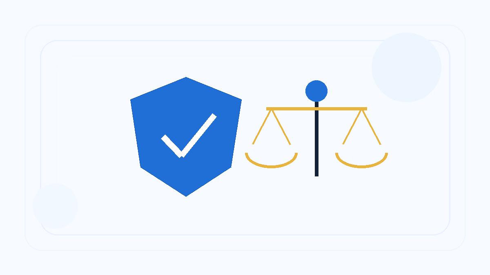
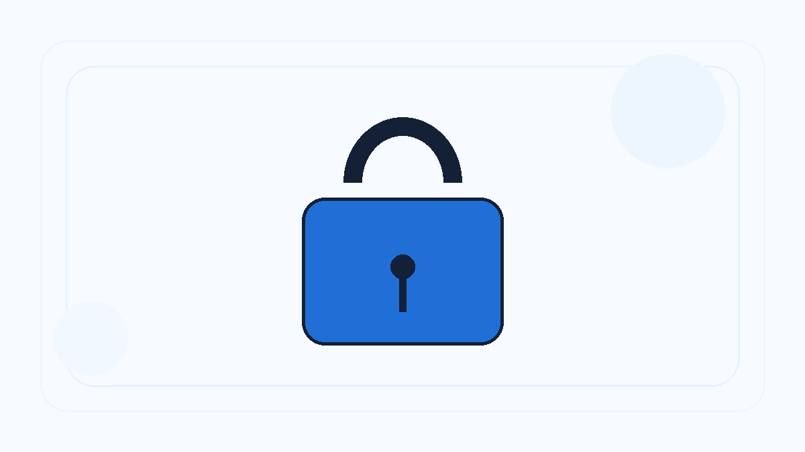
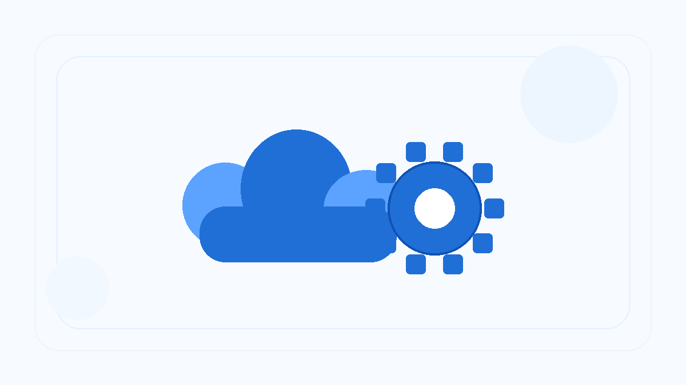

Skeb Sniper automatically sends your request right after your favorite artist opens commissions, so you do not have to stay awake or keep checking manually.
Support this project
This project was built completely from scratch by one person. If you'd like to support development, please consider donating via Ko-fi. Every dollar is appreciated!
Discover Advanced Features of Skeb Sniper
Email-Triggered Monitoring
Never visits Skeb to monitor the artist's commission status.
Only visits Skeb once to submit your request after your artist opens requests.
Instantly sends a request to your artist right after Skeb sends an email notification to your inbox.
Fully Automated Request Submission
Automated user authentication and log-in.
Automated verification with Skeb by extracting verification codes from emails.
Embedded locking mechanism ensuring that each request is sent only once.

ToS-Compliant and Ethical
Only one request to Skeb is made per artist, imposing less server load than manual checks.
Only official emails from Skeb are processed.
No data is collected from Skeb.
User-Centric Designs
Includes an installer for Windows and a prebuilt Docker image for Linux.
A user-friendly GUI is included in the app to handle every task.
Instructions are provided in the GUI's "Help" tab.

Privacy and Security
Your data is encrypted with user-specific and machine-specific mechanisms to prevent attacks.
Data is stored only on your local machine.
Your data is never collected or transmitted.

Reliable Background Service
Runs as a Windows Service on Windows and a Daemon on Linux for continuous operation.
Automatically restarts after crashes, network issues, or system reboots.
Automatically refreshes the Gmail and Outlook token if it expires.
Ultra-Lightweight Design
No webpage is launched to monitor artists, ensuring minimal network usage.
Only processes emails from Skeb, ignoring irrelevant ones.
Remains idle most of the time and only activates when an email from Skeb is received.
Efficient Email Notification Handling
Supports popular email providers like Gmail and Outlook.
Real-time email listener status updates via the interface.
Isolates email notifications so you only receive your own alerts.